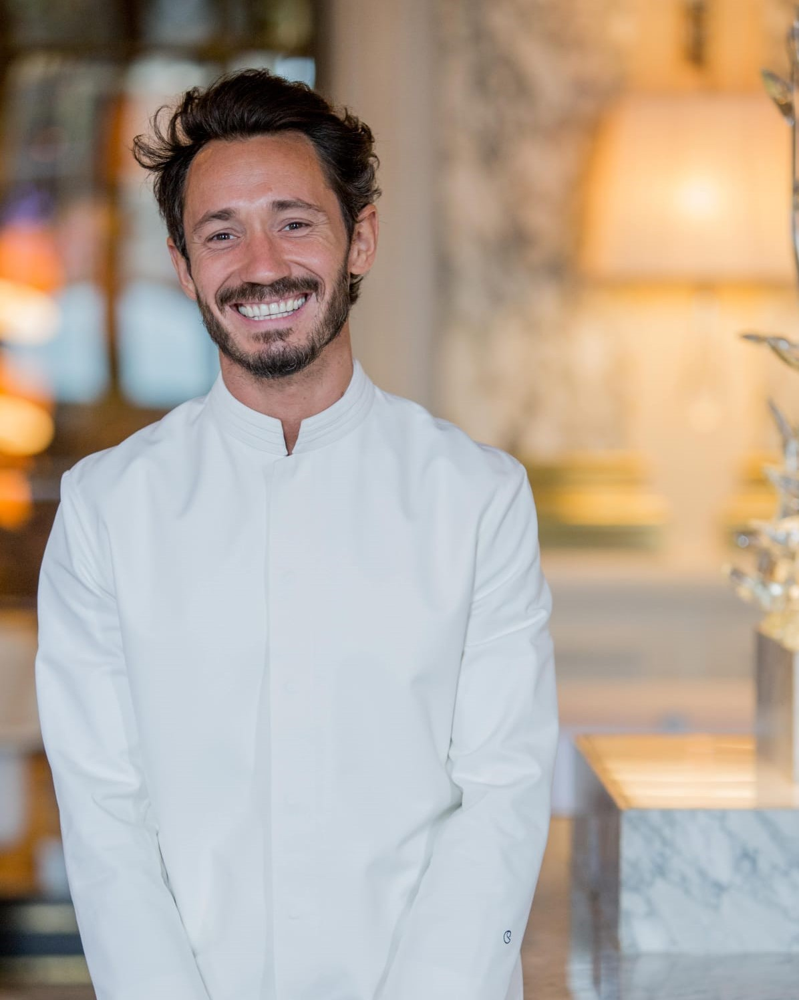
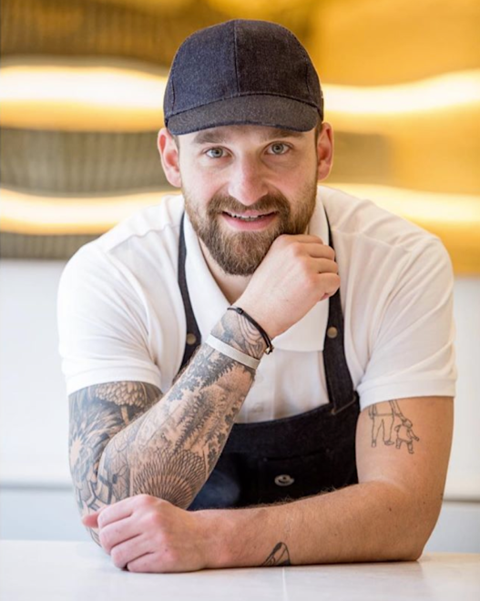

Cedric Grolet
Cédric Grolet es un pastelero francés. Es el pastelero ejecutivo de Le Meurice, en París, parte de la Dorchester Collection

Yohan Caron
Yohann Caron, pastelero de la boutique Cédric Grolet Opéra y François Deshayes, ayudante de pastelero de Le Meurice